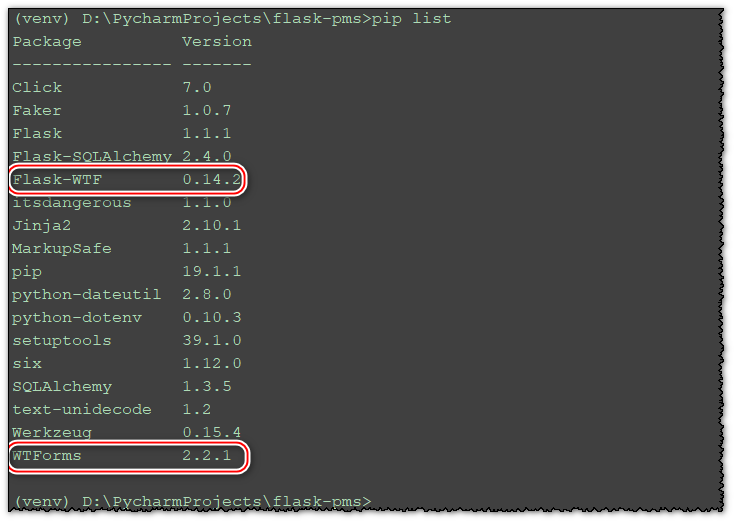
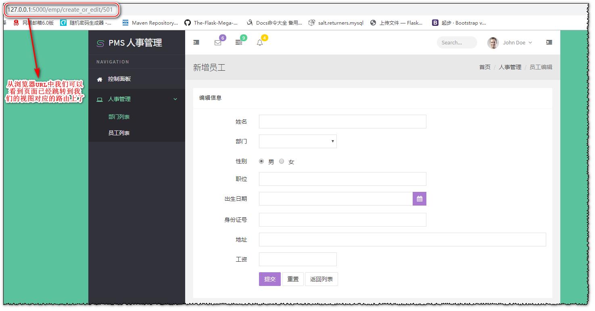

Flask-WTF 对 WTForms 进行了封装使它能够在 Flask 框架中可以被调用，其中 Flask-WTF 的功能都是继承自 WTForms ，因此安装 Flask-WTF 时会自动安装 WTForms 模块。
pip install flask-wtf
表单类可以继承自Flask-WTF封装的FlaskForm类，可以从wtforms导入表单字段的类型，如下表单类的创建：
# -*- coding: utf-8 -*-
from flask_wtf import FlaskForm
from wtforms import StringField, RadioField, DateField, DecimalField, SelectField
class EmployeeForm(FlaskForm):
name = StringField('姓名')
gender = RadioField('性别', default='男')
job = StringField('职位')
birthdate = DateField('出生日期')
idCard = StringField('身份证号')
address = StringField('地址')
salary = DecimalField('工资')
department = SelectField('部门')
根据创建好的表单类，我们就可以创建我们的视图函数，来处理和呈现我们的代码逻辑：
# -*- coding: utf-8 -*-
from flask import render_template
from flask.views import MethodView
from pms.forms import EmployeeForm
class EmployeeEditOrCreateView(MethodView):
def get(self, id=None):
form = EmployeeForm()
return render_template('admin/emp-create-or-edit.html', form=form)
def post(self, id=None):
pass
# 添加视图函数规则，并添加视图函数的endpoint
employee.add_url_rule('/create_or_edit/<id>', view_func=EmployeeEditOrCreateView.as_view('emp_create_or_edit'))
在前台页面我们就可以使用我们传递的表单类进行form表单控件的替换了：
<form class="form-horizontal" role="form" method="post" action="{{ url_for('admin.emp_add') }}">
{# 姓名 #}
<div class="form-group">
{# <label for="name" class="col-lg-2 col-sm-2 control-label">姓名</label>#}
{# 使用flask-wtf表单控件之后，label标签也可以省略#}
{{ form.name.label(class="col-lg-2 col-sm-2 control-label") }}
<div class="col-lg-6">
{# <input type="text" class="form-control" id="name" name="name">#}
{# 如果你希望某些控件的属性也添加进来，可以直接在name中加入，方式如下：#}
{{ form.name(class="form-control") }}
</div>
</div>
</form>展示效果：

Flask-WTF 默认为每个表单启用了 CSRF 保护，它会为我们自动生成 CSRF 令牌。在Flask-WTF 中默认情况会使用程序密钥对 CSRF 令牌进行签名，所以我们需要为程序设置密钥：
app.secret_key = 'HENjsa3IJ7HfF9KG'